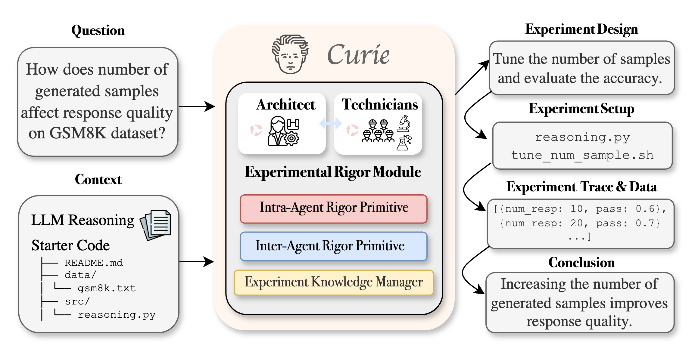
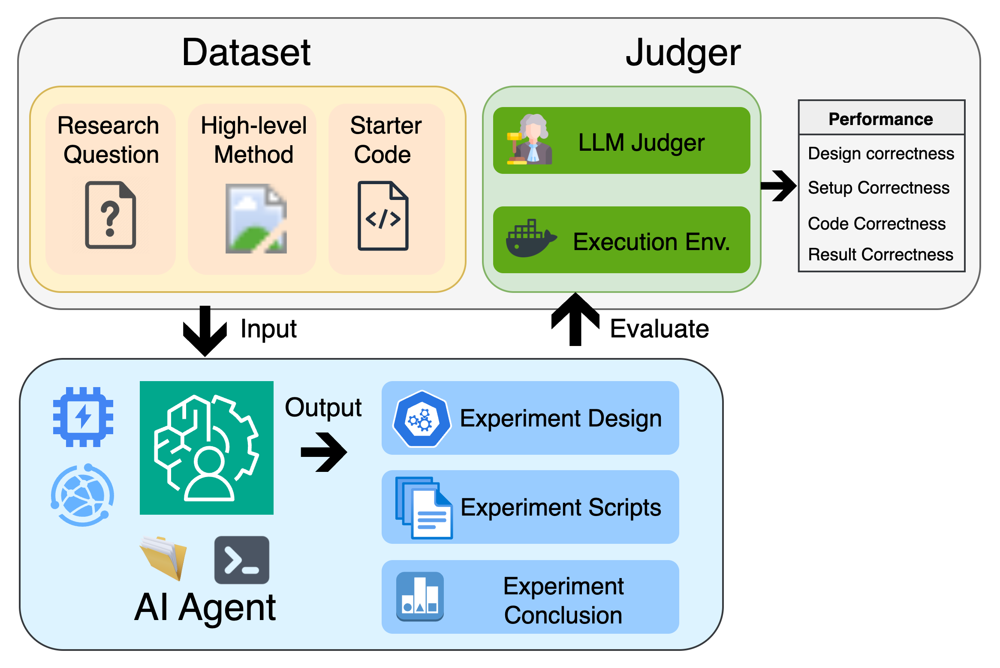

|
Qiuyi Ding I am an undergraduate student in Computer Science at the University of Michigan. I'm advised by Prof. Andrew Owens during my honors program. I'm also fortunate to collaborate with Prof. Ang Chen and Patrick Kon, who provided me with invaluable research experience. |
Research InterestsMy research interests lie in controllable generative models and multimodal perception systems, particularly in developing world models and embodied AI that integrate perception, reasoning, and interaction. |
News01/2026: 🎉 One paper accepted to ICLR 2026, See you in Brazil! |
Publications |
|  |
Curie: Toward Rigorous and Automated Scientific Experimentation with AI Agents
Patrick Tser Jern Kon*, Jiachen Liu*, Qiuyi Ding, Yiming Qiu, Zhenning Yang, Yibo Huang, Jayanth Srinivasa, Myungjin Lee, Mosharaf Chowdhury, Ang Chen arXiv preprint 2025 project page / arXiv / GitHub An AI agent framework designed to automate scientific experimentation with rigor at its core. From reproducing existing results to extending and challenging them, Curie enables researchers to move scientific research at the speed of thought. |

|
HidingSound: Adaptive Soundscape Generation for Online Noise Coverage
Qiuyi Ding, Yiming Dou, Andrew Owens Under submission project page An online soundscape generation framework that perceptually covers urban noise with adaptive natural soundscapes, enabling more comfortable listening experiences in real-world environments such as New York City. |
|  |
EXP-Bench: Can AI Conduct AI Research Experiments?
Patrick Tser Jern Kon*, Qiuyi Ding*, Jiachen Liu, Xinyi Zhu, Jingjia Peng, Jiarong Xing, Yibo Huang, Yiming Qiu, Jayanth Srinivasa, Myungjin Lee, Mosharaf Chowdhury, Matei Zaharia, Ang Chen ICLR 2026 arXiv / Hugging Face / GitHub We introduce a large-scale benchmark of 461 AI research experiments and 12,000+ subtasks to evaluate whether AI agents can conduct end-to-end scientific experimentation. |
Selected Projects
|
Misc. |
|
I enjoy playing tabletop role-playing games such as D&D and COC. I've been fortunate to meet some wonderful friends through in-person sessions. Here's a photo of our dice collection. |
|
Website template from Jon Barron. |

{kind=link}
{kind=link}